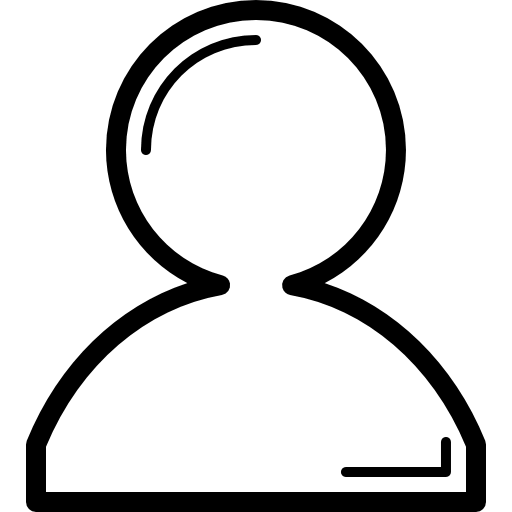

Bienvenue Chez ECONUDGE DRC
Votre partenaire pour un avenir durable
Chez EconudgeDRC, nous croyons en un monde où le recyclage et l'innovation vont de pair. Notre mission est de transformer le plastique recyclé en pavés de haute qualité, contribuant ainsi à la protection de notre environnement tout en offrant des solutions économiques et efficaces.
Nos produits
Nous créons des pavés en alliant plastique recyclé et sable, offrant une alternative durable aux pavés traditionnels. Nos produits sont conçus pour répondre aux besoins des professionnels et des particuliers, garantissant robustesse et performance.
Pourquoi Nous ?
- Du long terme : Lorsque vous souhaitez changer de décor, vous pouvez nous revendre vos pavés ou les échanger contre un autre modèle à un prix réduit.
- Durabilité et qualité : Nos matériaux de construction ne sont pas seulement écologiques, mais aussi économiquement avantageux, offrant une alternative durable sans compromettre la qualité ou la sécurité.
- Personnalisation et création d'emplois locaux : Avec ECONUDGE DRC, la personnalisation des matériaux est possible suivant la forme ou la couleur désirée par le client. Nous mettons sur le marché une gamme de produits variés à des prix accessibles créés par des Congolais.
- Éducation environnementale et santé communautaire : ECONUDGE DRC sensibilise sur le tri sélectif, réduisant ainsi les inondations et leurs conséquences sanitaires et sociales.
Avantages Environnementaux et Sociaux
Impact Environnemental
En utilisant les déchets plastiques comme ressource principale, nous réduisons la pollution, diminuons l'empreinte carbone de la construction et contribuons à la lutte contre le changement climatique.
Engagement Social
ECONUDGE DRC s'investit dans le développement communautaire en éduquant les élèves sur l'environnement, soutenant les initiatives de tri, et en créant des emplois locaux.
Notre Mission
ECONUDGE DRC s'attaque à la pollution plastique via 3 axes : sensibilisation et éducation environnementale, collecte et recyclage des déchets plastiques en matériaux de construction durables, offrant des solutions innovantes pour le bâtiment.
Nos Services
- Vente de pavés
- Livraison
- Pose de pavés
Nos Clients
BtoC
Particuliers, Ingénieurs en construction
BtoB
Quincailleries, Agences de BTP